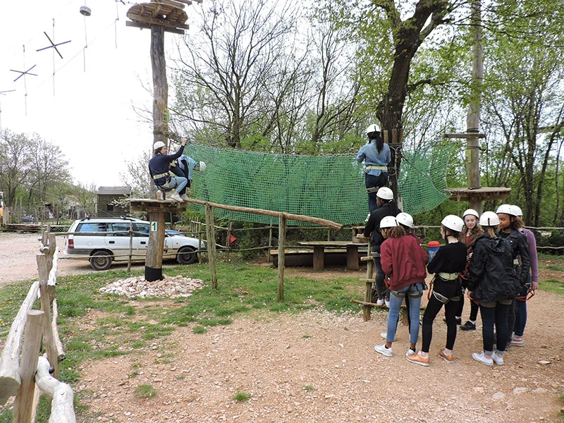
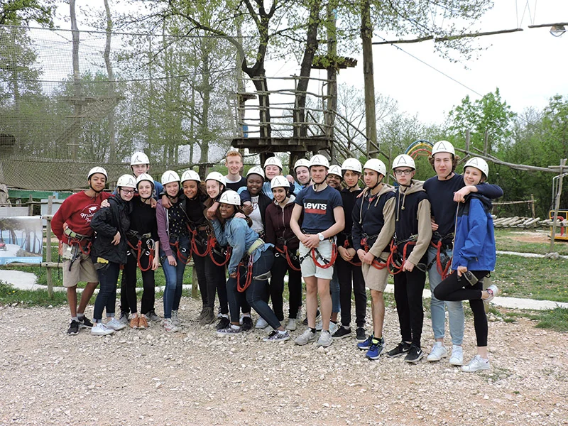

Penjački zid
Vanjski penjački zid u Glavani Parku nudi nekoliko smjerova na namjenskoj konstrukciji u šumskoj čistini. Osoblje prilagođava harnes i kacigu, objašnjava signale i podržava vas bez obzira je li prvo penjanje ili gradite samopouzdanje za visoke staze.
Zid je odličan za obitelji, školske grupe na zagrijavanju i posjetitelje između većih vožnji. Nosite tenisice s dobrim gripom. Mlađa djeca često mogu penjati uz pomoć instruktora — pitajte na ulazu o prikladnosti.
Video penjačkog zida
Penjanje na otvorenom za sve razine
Vanjski penjački zid u šumskoj čistini nudi više smjerova — od početničkih držala do strmijih izazova. Idealno za zagrijavanje prije visokih staza, školske grupe ili obitelji između većih vožnji.
Tko može penjati
Vožnje su pod nadzorom instruktora s harnesom i kacigom. Mlađa djeca često penju uz pomoć — pitajte osoblje o dobi i visini na ulazu.
Uključeno u pakete
Penjački zid uključen je u pakete cijelog parka. Pogledajte cijene i rezervaciju.
Planiranje posjeta
Glavani Park se nalazi u Glavanima 10, Barban — otprilike 30 minuta vožnje od Pule, 45 minuta od Rovinja i Rabca te 50 minuta od Poreča. Besplatno parkiranje je na licu mjesta. Park radi svaki dan 9–17 h; posljednji ulaz u 15 h, stoga planirajte tri do četiri sata za cijeli park.
Za penjački zid i ostale atrakcije možete rezervirati ulaznice online za grupe do 10 osoba ili nazvati za veće grupe. Pogledajte pakete i cijene — cijeli park s katapultom €60–70 (djeca/odrasli), cijeli park bez katapulata €40–50, trening ruta + 2 igre €20–30, obiteljski paketi od €150.
Sigurnost i oprema
Svaka aktivnost u Glavani Parku vodi se pod nadzorom kvalificiranih instruktora. Oprema je CE certificirana i provjerava se dnevno. Prije početka dobivate harnes, kacigu i jasnu obuku. Više o standardima pročitajte na našoj stranici o sigurnosti.
Paketi od €20 djeca / €30 odrasli · online do 10 osoba
Fotografije posjetitelja — Penjački zid

